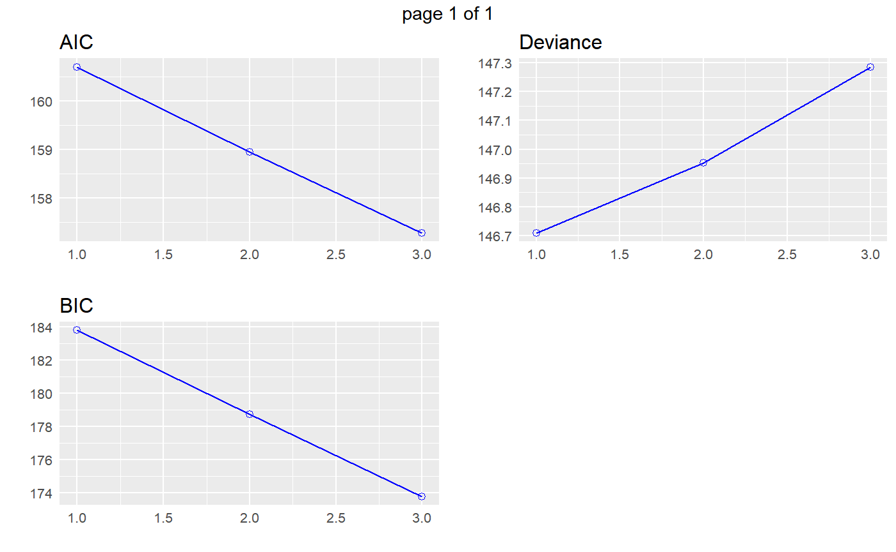

Build regression model from a set of candidate predictor variables by removing predictors based on p values, in a stepwise manner until there is no variable left to remove any more.
blr_step_p_backward(model, ...) # S3 method for default blr_step_p_backward(model, prem = 0.3, details = FALSE, ...) # S3 method for blr_step_p_backward plot(x, model = NA, ...)
| model | An object of class |
|---|---|
| ... | Other inputs. |
| prem | p value; variables with p more than |
| details | Logical; if |
| x | An object of class |
blr_step_p_backward returns an object of class "blr_step_p_backward".
An object of class "blr_step_p_backward" is a list containing the
following components:
total number of steps
variables removed from the model
akaike information criteria
bayesian information criteria
deviance
predictors
Chatterjee, Samprit and Hadi, Ali. Regression Analysis by Example. 5th ed. N.p.: John Wiley & Sons, 2012. Print.
Other variable selection procedures: blr_step_aic_backward,
blr_step_aic_both,
blr_step_aic_forward,
blr_step_p_forward
# stepwise backward regression model <- glm(honcomp ~ female + read + science + math + prog + socst, data = hsb2, family = binomial(link = 'logit')) blr_step_p_backward(model)#> Backward Elimination Method #> --------------------------- #> #> Candidate Terms: #> #> 1 . female1 #> 2 . read #> 3 . science #> 4 . math #> 5 . prog2 #> 6 . prog3 #> 7 . socst #> #> We are eliminating variables based on p value... #> #> Variables Removed: #> #> <U+2716> prog3 #> <U+2716> prog2 #> <U+2716> socst #> #> No more variables satisfy the condition of p value = 0.3 #> #> #> Final Model Output #> ------------------ #> #> <U+2714> Creating model overview. #> <U+2714> Creating response profile. #> <U+2714> Extracting maximum likelihood estimates. #> <U+2714> Estimating concordant and discordant pairs. #> #> Model Overview #> ------------------------------------------------------------------------ #> Data Set Resp Var Obs. Df. Model Df. Residual Convergence #> ------------------------------------------------------------------------ #> data honcomp 200 199 195 TRUE #> ------------------------------------------------------------------------ #> #> Response Summary #> -------------------------------------------------------- #> Outcome Frequency Outcome Frequency #> -------------------------------------------------------- #> 0 147 1 53 #> -------------------------------------------------------- #> #> Maximum Likelihood Estimates #> ----------------------------------------------------------------- #> Parameter DF Estimate Std. Error z value Pr(>|z|) #> ----------------------------------------------------------------- #> (Intercept) 1 -14.5773 2.1568 -6.7589 0.0000 #> female1 1 1.3622 0.4605 2.9580 0.0031 #> read 1 0.0631 0.0281 2.2455 0.0247 #> science 1 0.0569 0.0326 1.7429 0.0814 #> math 1 0.1113 0.0338 3.2992 0.0010 #> ----------------------------------------------------------------- #> #> Association of Predicted Probabilities and Observed Responses #> --------------------------------------------------------------- #> % Concordant 0.8835 Somers' D 0.7669 #> % Discordant 0.1165 Gamma 0.7669 #> % Tied 0.0000 Tau-a 0.3003 #> Pairs 7791 c 0.8835 #> --------------------------------------------------------------- #>#> #> #> Elimination Summary #> ---------------------------------------------------- #> Variable #> Step Removed AIC BIC Deviance #> ---------------------------------------------------- #> 1 prog3 160.7102 183.7984 146.7102 #> 2 prog2 158.9527 178.7427 146.9527 #> 3 socst 157.2856 173.7772 147.2856 #> ----------------------------------------------------# stepwise backward regression plot model <- glm(honcomp ~ female + read + science + math + prog + socst, data = hsb2, family = binomial(link = 'logit')) k <- blr_step_p_backward(model)#> Backward Elimination Method #> --------------------------- #> #> Candidate Terms: #> #> 1 . female1 #> 2 . read #> 3 . science #> 4 . math #> 5 . prog2 #> 6 . prog3 #> 7 . socst #> #> We are eliminating variables based on p value... #> #> Variables Removed: #> #> <U+2716> prog3 #> <U+2716> prog2 #> <U+2716> socst #> #> No more variables satisfy the condition of p value = 0.3 #> #> #> Final Model Output #> ------------------ #> #> <U+2714> Creating model overview. #> <U+2714> Creating response profile. #> <U+2714> Extracting maximum likelihood estimates. #> <U+2714> Estimating concordant and discordant pairs. #> #> Model Overview #> ------------------------------------------------------------------------ #> Data Set Resp Var Obs. Df. Model Df. Residual Convergence #> ------------------------------------------------------------------------ #> data honcomp 200 199 195 TRUE #> ------------------------------------------------------------------------ #> #> Response Summary #> -------------------------------------------------------- #> Outcome Frequency Outcome Frequency #> -------------------------------------------------------- #> 0 147 1 53 #> -------------------------------------------------------- #> #> Maximum Likelihood Estimates #> ----------------------------------------------------------------- #> Parameter DF Estimate Std. Error z value Pr(>|z|) #> ----------------------------------------------------------------- #> (Intercept) 1 -14.5773 2.1568 -6.7589 0.0000 #> female1 1 1.3622 0.4605 2.9580 0.0031 #> read 1 0.0631 0.0281 2.2455 0.0247 #> science 1 0.0569 0.0326 1.7429 0.0814 #> math 1 0.1113 0.0338 3.2992 0.0010 #> ----------------------------------------------------------------- #> #> Association of Predicted Probabilities and Observed Responses #> --------------------------------------------------------------- #> % Concordant 0.8835 Somers' D 0.7669 #> % Discordant 0.1165 Gamma 0.7669 #> % Tied 0.0000 Tau-a 0.3003 #> Pairs 7791 c 0.8835 #> --------------------------------------------------------------- #>plot(k)